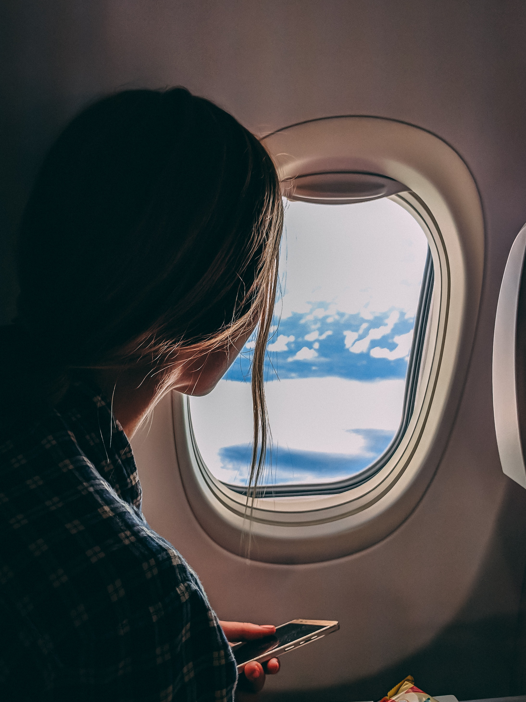

Hello fellow travelers, I created this site to demonstrate different countries that I would recommend travelling to as a woman on a solo adventure. Often as a young woman myself, I want to get up, pack a bag, and travel to various places. But I also must ask myself questions such as: “Is it okay to travel by myself”? “Do I need to bring something to protect myself?” “Would I be able to communicate well enough to travel alone?” “What items should I bring?” … So, I thought I would share some of the insight I have gathered through experience on this site. I will help you find your dream vacation while easing your worries. The” Where to go page” includes my top three destinations. I recorded an audio overview for each.
“Silhouette of Person standing on rock under starry night” by Kamil. CCO for Public Doman. Pexels. September 28,2020.